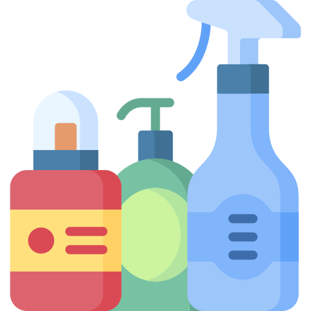
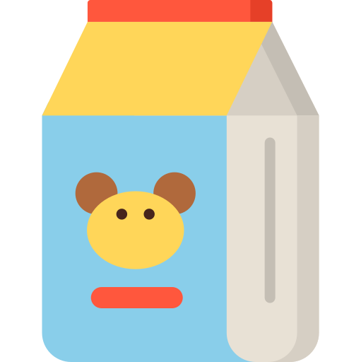

Ciclo do Óleo
Passo a Passo para Descartar Óleo de Cozinha

(https://www.oleosustentavel.org.br/ciclo-do-oleo)
Produtos Gerados pela Reciclagem do Óleo de Cozinha
Biodiesel
Sabão

Produtos de Limpeza
Tintas a Óleo

Ração Animal

Massa de Vedação em Vidro
* Ícones feitos por Freepik from www.flaticon.com
Transformando Óleo de Cozinha em Sabão
Abaixo, segue uma receita de como transformar óleo de cozinha usado em sabão caseiro, feita por Iberê Thenório, criador do canal Manual do Mundo.